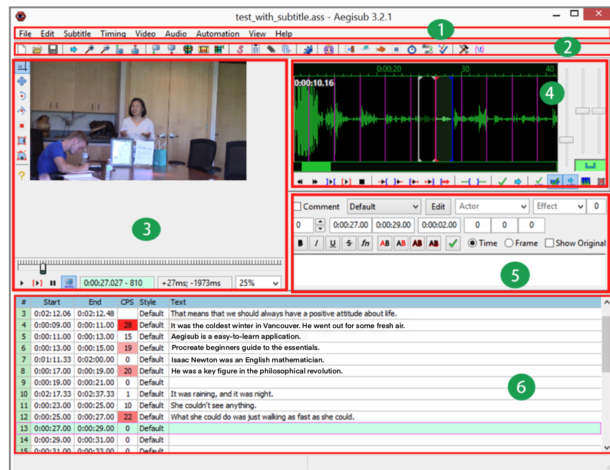

Main Screen
Here is the main screen of Aegisub.

 Menu Bar contains all functions and divides functions into nine categories. Users click on a category menu to get the drop-down menu, and then select the desired function from it.
Menu Bar contains all functions and divides functions into nine categories. Users click on a category menu to get the drop-down menu, and then select the desired function from it.
Here is how the functions are divided in each category:
- File menu includes functions such as opening, closing, saving, and exporting files.
- Editing menu includes traditional editing functions such as copy and paste.
- Subtitle menu includes functions to manipulate subtitles such as style design, language translation, spelling check, and text editing.
- Timing menu includes time shifting and post-processing.
- Video menu includes functions such as opening video files and related files, as well as key frame operating.
- Audio menu includes functions to open and close an audio file as well as other related operations.
- Automation menu includes advanced batch process functions.
- View menu lets users control the windows to be displayed or not displayed.
- Help menu leads users to an online manual, user's forum, and other support resources.
 Toolbar contains icons for many frequently used functions. Users can fulfill a frequently conducted task by only one click on the corresponding icon. Using toolbar increases productivity by saving users' time on finding the sub-menu from the main menu.
Toolbar contains icons for many frequently used functions. Users can fulfill a frequently conducted task by only one click on the corresponding icon. Using toolbar increases productivity by saving users' time on finding the sub-menu from the main menu.
 Video Area displays the video to which you need to add subtitles. Users can play and search on the video to check whether subtitles appear on the screen at the right time points. Users can also watch the video to see whether the typesetting of subtitles looks good or not.
Video Area displays the video to which you need to add subtitles. Users can play and search on the video to check whether subtitles appear on the screen at the right time points. Users can also watch the video to see whether the typesetting of subtitles looks good or not.
Audio Area displays an audio file in both waveform and spectrum. Users can locate the start and end time points for a selected subtitle sentence. Users can change the amplitude and time range displayed on the screen as well as play the audio by clicking the buttons underneath the waveform.
Subtitles Editing Area is where users edit subtitles. Main editing tasks that users can execute include changing time points, designing typesetting, and editing subtitle text.
Subtitles Grid is a table for displaying subtitles. Each line of subtitles is displayed in one row with its line number, start time, end time, characters per second (CPS), typesetting style, and text in separate columns. The CPS in red represents that too many characters are displayed in one second, and this subtitle line should be adjusted to a shorter sentence.